坚持把人民群众反映的食品安全突出问题作为工作重点，把实现人民群众对食品安全的美好愿望作为努力方向，着力推进企业主体责任和政府监管责任的落实，健全食品安全保障体系，提升监管能力和工作水平，提升群众食品安全满意度。

①上海市委、市政府全力支持基层落实食品安全“四有两责”
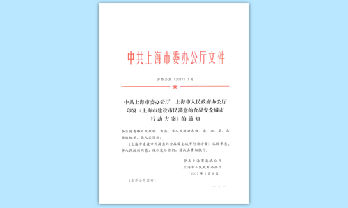②《中共上海市委办公厅 上海市人民政府办公厅印发<上海市建设市民满意的食品安全城市行动方案>的通知》
③上海市食药安委召开《建设市民满意的食品安全城市行动方案》专题会议
④各区推进食品安全工作
⑤诚信经营、食品安全示范街创建启动仪式
⑥市食药监管局执法总队集体宣誓
⑦各级食品药品监管部门加强执法检查
⑧12331举报热线成立五年来共受理市民食品安全投诉举报与咨询42万件
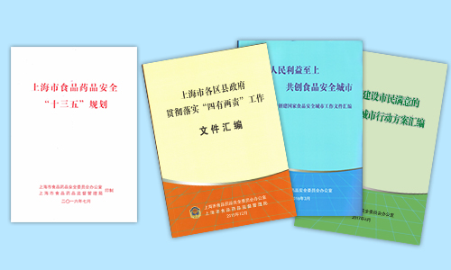⑨《上海市食品药品安全“十三五”规划》
⑩《上海市各区县政府贯彻落实“四有两责”工作文件汇编》、《坚持人民利益至上、共创食品安全城市——上海市创建国家食品安全城市工作文件汇编》、《上海市建设市民满意的食品安全城市行动方案汇编》
以规划为引领，全面落实党政同责与“四有两责”。各区争创“市民满意的食品安全城区”，全市213个街镇全面建成“上海市食品安全示范街镇”。
（一）创建历程
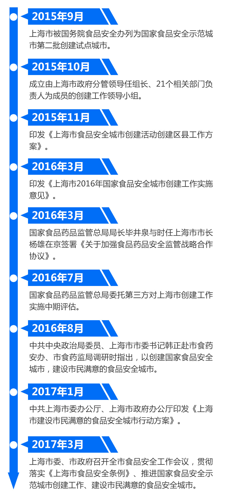
（二）创建成效
1.市民满意度；
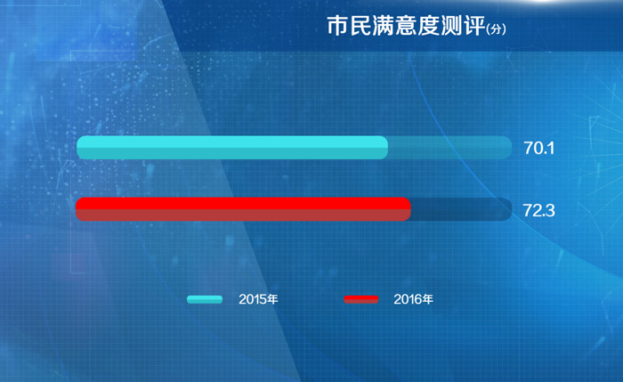2.市民食品安全知识知晓率；
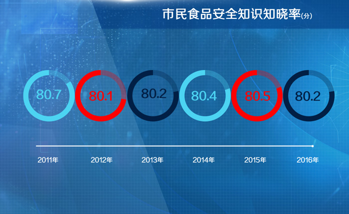3.食品投诉举报件（含食品安全投诉起数、按时答复率、办结率和查实率）；
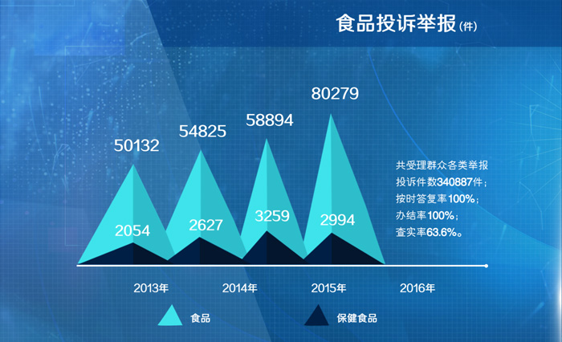4.食品安全风险监测样品数和总体合格率；
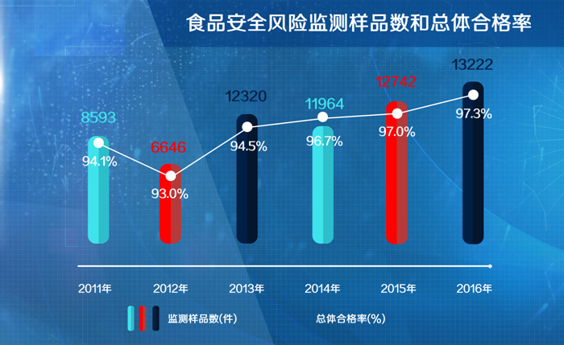5.食品生产经营分类分级管理（含食品生产企业量化分级管理、食品流通企业分类监管、餐饮服务的单位量化监督动态等评定）；
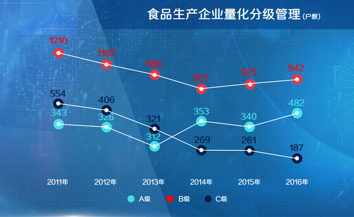 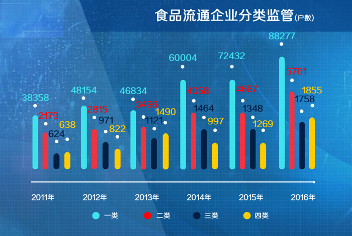 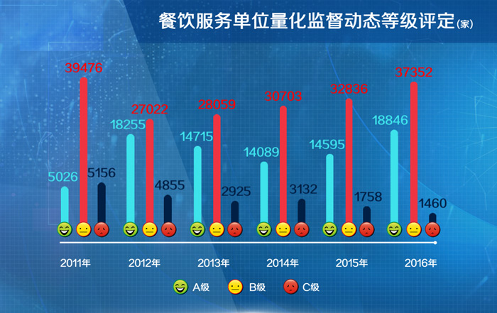6.食品生产经营单位数量；
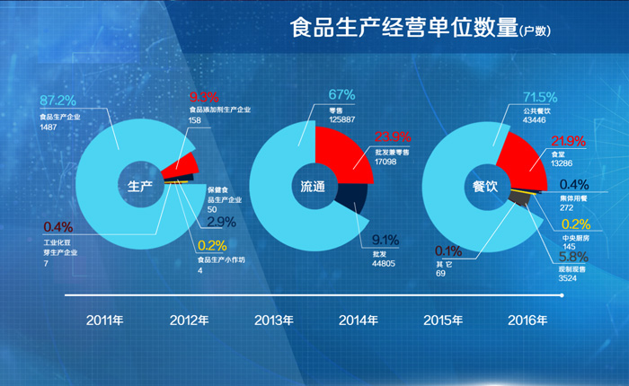7.集体性食物中毒年报告发生率；
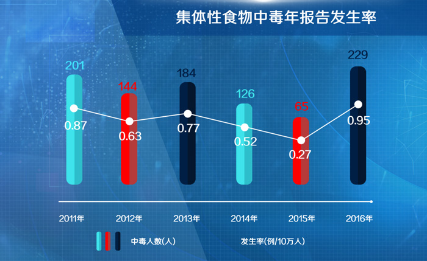8.打击食品安全违法犯罪。
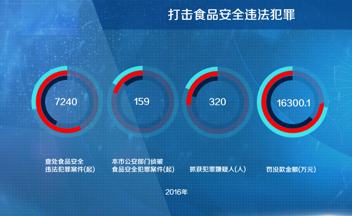